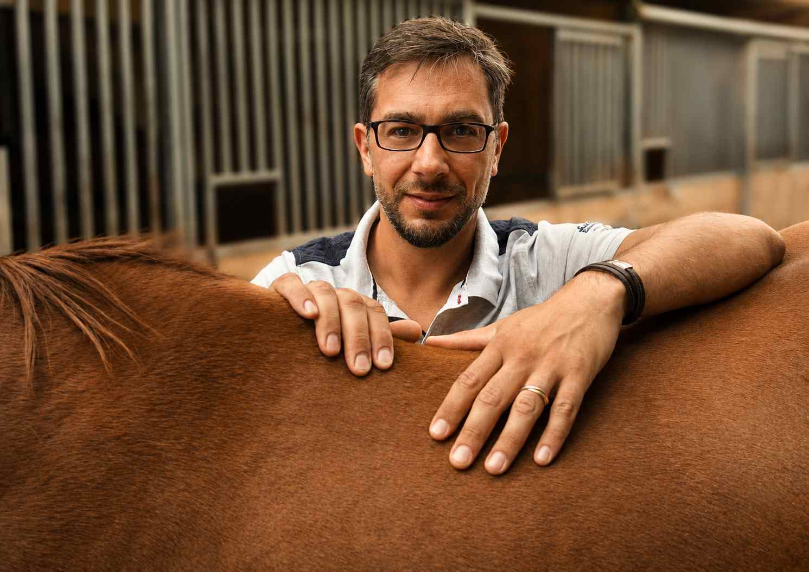

01
Contrôle de routine
Pour vous assurer que tout va bien entre votre selle et votre cheval, même en l'absence de signe apparent.
Benjamin Mahieu se déplace dans votre écurie pour vérifier l'adéquation entre votre selle et votre cheval — et apporter les solutions adaptées.
Me contacterTrop de chevaux sont mal sellés avec du matériel inadapté à leur morphologie. Quelle que soit la marque ou le modèle de votre selle, elle ne doit en aucun cas occasionner des contraintes ou des blessures à votre cheval.
Une bonne selle est une selle adaptée à la morphologie du cavalier, mais aussi et surtout à celle de son cheval. Pour cela, il est impératif de faire régulièrement un diagnostic complet de votre selle sur votre cheval et, si nécessaire, d'apporter des solutions concrètes pour qu'il puisse évoluer dans les meilleures conditions.

Pour vous assurer que tout va bien entre votre selle et votre cheval, même en l'absence de signe apparent.
Pour savoir si votre selle actuelle correspond bien à la morphologie de votre nouveau cheval.
Lors de l'acquisition d'une selle neuve ou d'occasion, pour vérifier son adéquation avec votre cheval.
Si votre cheval réagit au sanglage, au montoir, ou montre tout autre comportement inhabituellement négatif.
En cas de blessures visibles au garrot, ou si un professionnel de la santé équine alerte de douleurs liées à la selle.
Si vous envisagez l'acquisition d'une selle neuve, Benjamin vous accompagne dans ce choix avec objectivité.
L'objectif du diagnostic est de vérifier l'adéquation entre votre selle et votre cheval. Benjamin se déplace directement dans votre écurie pour un examen complet et approfondi.
Ensemble, vous vérifierez une multitude d'éléments :
Si tous les éléments correspondent, votre cheval est correctement sellé. Si des incohérences sont détectées, Benjamin vous apportera les solutions adaptées pour le soulager.

Benjamin Mahieu est un spécialiste en selle d'équitation. Évoluant depuis toujours dans le milieu équestre, il a d'abord été moniteur d'équitation, puis cavalier professionnel dans des écuries de haut niveau, en compétition de saut d'obstacles jusqu'en PRO2.
Il a ensuite décidé de vouer sa carrière au bien-être du cheval en accompagnant les cavaliers dans le choix de leurs selles. Après avoir été responsable technique pendant 9 ans pour une grande marque nationale, il s'est spécialisé dans la modification et l'adaptation de selle à l'anatomie du cheval.
Benjamin a eu l'opportunité d'être formé par l'un des meilleurs Maîtres Selliers du monde, Jean-Luc Parisot (Parisot Sellier), qui équipe entre autres les Écuyers du Cadre Noir de Saumur.
Mon cheval était très réticent au montoir depuis plusieurs mois. Après l'intervention de Benjamin, les changements ont été immédiats.
Benjamin est venu directement à l'écurie, il a pris le temps d'expliquer chaque point du diagnostic. Sérieux, pédagogue, et vraiment objectif.
J'ai fait appel à Benjamin lors de l'achat de ma selle. Son regard d'expert m'a évité une erreur coûteuse. Je recommande sans hésiter.
N'hésitez pas à me contacter pour en discuter. Chaque cheval est différent. Un simple échange permet souvent d'orienter vers la solution la plus adaptée.